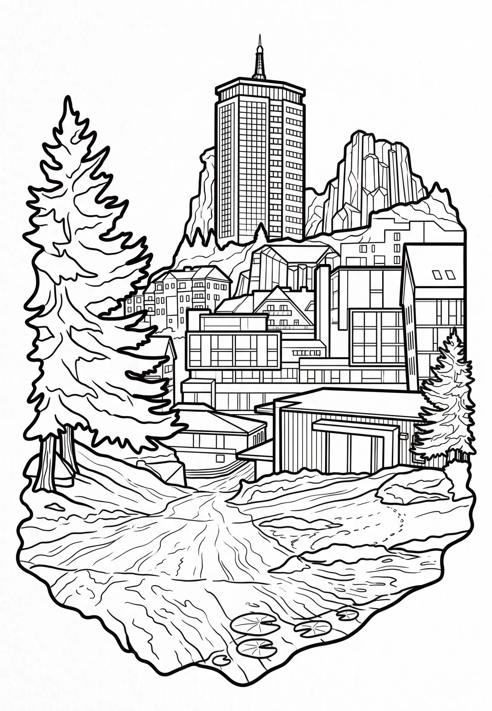

Pec pod Sněžkou
Pec pod Sněžkou (dříve Velká Úpa III, německy Petzer, česky dříve do roku 1945 Pecr) je město v okrese Trutnov v Královéhradeckém kraji na severovýchodě Čech. Město leží v Krkonoších na řece Úpě a Zeleném potoku. Žije zde 700 obyvatel. Pec pod Sněžkou je významným horským střediskem zimní i letní rekreace a významným centrem cestovního ruchu.
Více na Wikipedii